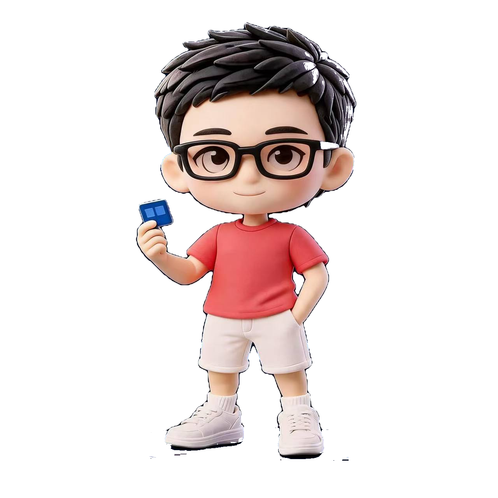

色彩系统方法论
查看完整方案 ↗
色彩系统方法论
查看完整方案 ↗
从色值，
到产品语言。
把感知色彩、无障碍要求、语义角色与组件状态连接成一套可维护的产品系统。
- 方向
- 设计系统 / 研究
- 职责
- 研究与设计

产品体验
设计系统
品牌动效
设计不是把问题藏起来。
精选 / 作品选集
两个围绕系统、视觉语言与交互体验展开的项目，重点展示我如何定义问题并推进设计。
色彩系统方法论
查看完整方案 ↗
把感知色彩、无障碍要求、语义角色与组件状态连接成一套可维护的产品系统。
 动态品牌视觉
查看完整方案 ↗
动态品牌视觉
查看完整方案 ↗
以光、深度和运动节奏为核心，把静态识别转化为可延展的数字体验语言。
系统 / 01
项目从感知色彩模型出发，统一无障碍约束、语义角色与组件状态，使色彩能够被设计、开发和产品团队共同使用。
动效 / 02
我的工作方式
从用户、业务与技术限制中找到真正的摩擦点。
把分散信息整理为团队可以共同推进的问题模型。
尽早让交互变得可感知，通过反馈持续收紧方向。
把关键决策沉淀为模式、状态与可实施的设计细节。
个人简历
如果你的团队需要认真、清晰的设计——
一起把它做对。THEEDWIIN@GMAIL.COM